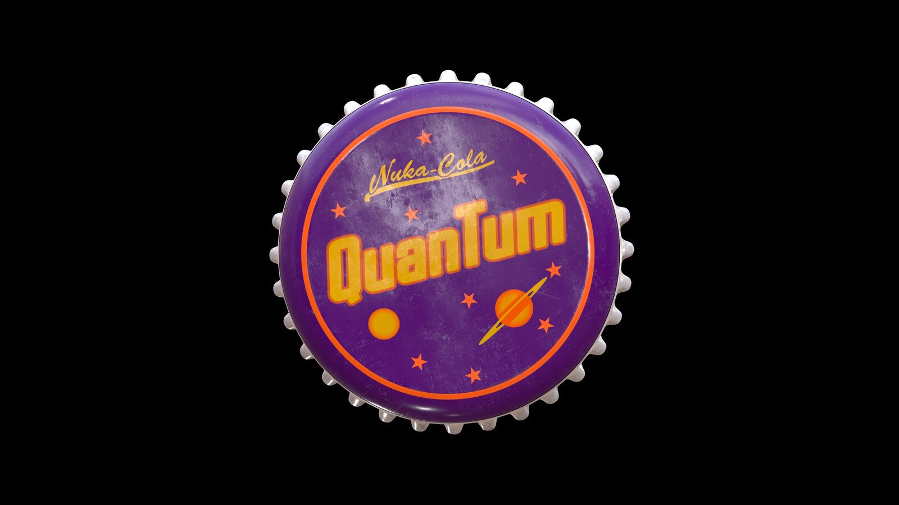

Nuka Cola Recipe

How to Make Nuka Cola Quantum
Ingredients
- 1 16-ounce can Monster "Ultra Blue" energy drink
- 1 cup Gatorade "Icy Charge"
- 2 cups Mountain Dew "Voltage"
Steps
- Measure Monster into a punch bowl. Pour a 16-ounce can of Monster "Ultra Blue" into a punch bowl/serving pitcher.
- Add the Gatorade to the bowl. Pour 1 cup of Gatorade "Icy Charge" into the punch bowl/serving pitcher. Pour slowly to prevent the Monster from fizzing up a lot.
- Pour in the Mountain Dew and stir the Nuka Cola Quantum. Pour 2 cups of Mountain Dew "Voltage" into the the punch bowl/serving pitcher. Take a long spoon and slowly stir the mixture until the liquids are combined.
- Serve the Nuka Cola Quantum. Set out serving glasses so guests can help themselves to this fizzy drink. If you'd like to put the cola in bottles, use a funnel to pour in into the bottles and serve them before the Nuka Cola Quantum loses its carbonation.
- If you choose to bottle the Nuka Cola Quantum, consider setting out some old Nuka Cola Caps.